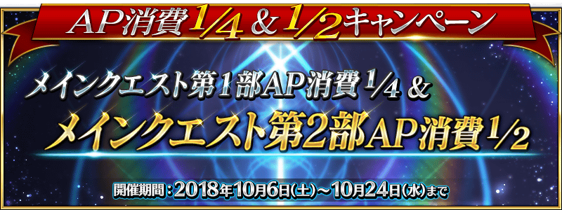

2018年10月6日(六) 17:00～10月24日(三) 11:59的期間，舉辦主線關卡第1部的AP消耗1/4、主線關卡第2部的AP消耗1/2的宣傳活動！
另外，預定在10月24日(三)舉辦的期間限定活動「神秘之國ＯＮＩＬＡＮＤ!! ～鬼王與卡姆伊的黃金～」，參加條件為通過第2部 第2章「Lostbelt No.2 無間冰焰世紀 諸神黃昏 不滅之火的好漢」。
活用本宣傳活動，推進主線關卡的攻略吧！
詳情請在此處的公告確認。
◆舉辦期間◆
2018年10月6日(六) 17:00～10月24日(三) 11:59
※自由關卡為對象外。
※強化關卡、幕間物語、曜日關卡為對象外。

現在永久舉辦的AP消耗量1/2狀態，再追加AP消耗量1/2，主線關卡第1部(從特異點F到終局特異點)的AP消耗量以期間限定變成1/4！
尚未通過至主線關卡第1部的Master，無論如何請藉此機會通過至終局特異點！
◆對象關卡◆
主線關卡第1部(從特異點F到終局特異點)
※請注意第1部的自由關卡為對象外。
※在戰鬥中撤退的情況AP的消耗也是1/4。
主線關卡第2部(從Lostbelt No.1到Lostbelt No.2)的AP消耗量以期間限定變成1/2！
尚未通過至主線關卡第2部的Master，無論如何請藉此機會通過至「Lostbelt No.2 無間冰焰世紀 諸神黃昏 不滅之火的好漢」！
◆對象關卡◆
主線關卡第2部(從Lostbelt No.1到Lostbelt No.2)
※請注意第2部的自由關卡為對象外。
※在戰鬥中撤退的情況AP的消耗也是1/2。
下述的期間中，在「Master任務」內以期間限定追加「【期間限定主線關卡通過聲援】任務」。
※已通過主線關卡的玩家也能同様地領取通過報酬。
◆領取期間◆
2018年10月6日(六) 17:00～11月4日(日) 22:59
| 任務名稱 | 任務達成報酬 |
|---|---|
| 【期間限定主線關卡通過聲援】
通過Lostbelt No.2 |
聖晶石 10個 |
| 【期間限定主線關卡通過聲援】
通過Lostbelt No.1 |
叡智的猛火 ALL★4(SR) 10張 |
| 【期間限定主線關卡通過聲援】
通過序／2017年 12月31日 |
叡智的猛火 ALL★4(SR) 10張 |
| 【期間限定主線關卡通過聲援】
通過終局特異點 |
叡智的猛火 ALL★4(SR) 10張 |
| 【期間限定主線關卡通過聲援】
通過第七特異點 |
叡智的猛火 ALL★4(SR) 10張 |
| 【期間限定主線關卡通過聲援】
通過第六特異點 |
叡智的猛火 ALL★4(SR) 10張 |
| 【期間限定主線關卡通過聲援】
通過第五特異點 |
叡智的猛火 ALL★4(SR) 10張 |
| 【期間限定主線關卡通過聲援】
通過第四特異點 |
叡智的猛火 ALL★4(SR) 10張 |
| 【期間限定主線關卡通過聲援】
通過第三特異點 |
叡智的猛火 ALL★4(SR) 10張 |
| 【期間限定主線關卡通過聲援】
通過第二特異點 |
叡智的猛火 ALL★4(SR) 10張 |
| 【期間限定主線關卡通過聲援】
通過第一特異點 |
叡智的猛火 ALL★4(SR) 10張 |
| 【期間限定主線關卡通過聲援】
通過特異點F |
黃金果實 10個 |
※請注意與每週日23:00更新的普通任務(Weekly)不同欄位，超過領取期間的話無法入手報酬。
※就算通過「【期間限定主線關卡通過聲援】任務」，也不會計算在普通任務(Weekly)的任務進行度。
※根據主線關卡的進行度會有無法達成【期間限定主線關卡通過聲援】任務的情況。
※請注意亞種特異點的主線關卡為對象外。